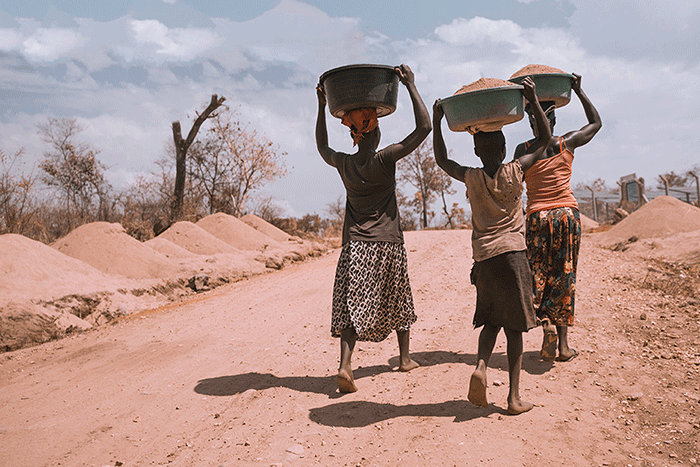
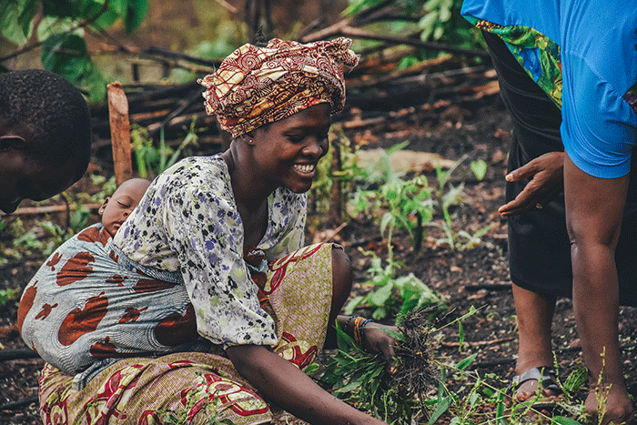

We are excited for you to partner with us in Helping the Horn of Africa! Scroll below to see examples of the crisis relief & community development projects we are currently working on...
☰
Large Investments
& sustainable strategies
To give, please click the button give now below, select PROJECT FUNDING and enter your desired amount.
GIVE NOWTrucking & Transportation
Trucking & Transportation of Goods:
Starting a business by purchasing 3 transport trucks to deliver goods around the city to local shops & businesses. These trucks will be rented to small businesses and independent contractors to generate income. This business will help local leaders provide for their families while also employing neighbors. The goal is for these local leaders to re-invest funds back into their communities to create self sustaining cycles.
Investment /micro loan amount: $25,000 (3 trucks)
***Remember, all donations are given to our general project fund collected by World Missions & Evangelism. We use this project fund to fuel our different projects listed below***
"If you are interested in giving to our project fund to fuel projects like this scroll to the top or bottom of the page and click the "GIVE NOW" button.
Sports Center Complex:
Sports Center Complex:
Purchasing land, materials, and labor to build a sports complex in densely populated areas. There is usually little to no access to gyms, soccer fields, pools, basketball courts, nutrition, training, and competitive organized team sports/leagues. This business will help local leaders provide for their families while also employing neighbors. The goal is for these local leaders to re-invest funds back into their communities to create self sustaining cycles.
Investment /micro loan amount: $50,000
***Remember, all donations are given to our general project fund collected by World Missions & Evangelism. We use this project fund to fuel our different projects listed below***
"If you are interested in giving to our project fund to fuel projects like this scroll to the top or bottom of the page and click the "GIVE NOW" button.
Recycling Business:
Recycling Business:
This region is oversaturated with garbage and plastic. The country has little jobs and limited exported goods. We can start a recycling business that creates more jobs, cleans the cities, and produces new exported goods which can stimulate the economy. This business can generate enough income to support the local ministries efforts allowing for sustainable funds and less reliance on outside organizations.
Estimated Overall Cost: $100,000
Recycling Machinery & property to process = $50,000
Vehicles to transport = $50,000
***Remember, all donations are given to our general project fund collected by World Missions & Evangelism. We use this project fund to fuel our different projects listed below***
"If you are interested in giving to our project fund to fuel projects like this scroll to the top or bottom of the page and click the "GIVE NOW" button.
To give, please click the button give now below, select PROJECT FUNDING and enter your desired amount.
GIVE NOWScroll down to continue viewing projects...

Crisis Relief & Community Development
View Projects…
